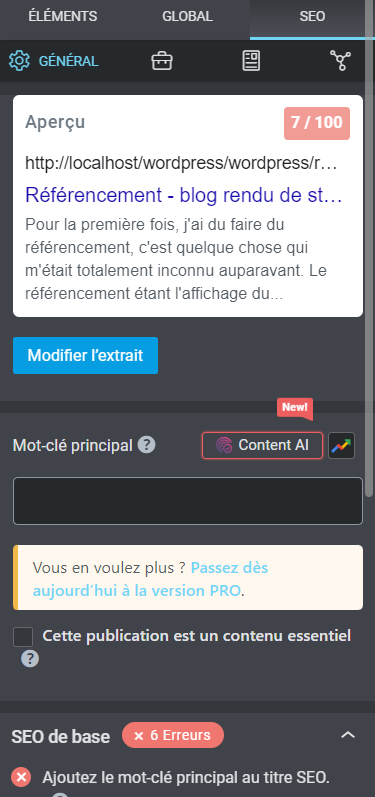

<html lang="fr">
  <!DOCTYPE html>
  <head>
    <meta charset="UTF-8" />
    <meta http-equiv="X-UA-Compatible" content="IE=edge" />
    <meta name="viewport" content="width=device-width, initial-scale=1" />
    <title>blog rendu de stage</title>
    <link href="/main.css" rel="stylesheet" />
    <link href="/assets/main_article_style.css" rel="stylesheet" />
  </head>
</html>

<header class="header">
  <h3 class="text1">blog de rendu de stage Louis Merlaud</h3>
  <a class="text2" href="../../index.html">A propos</a>
  <a class="text3" href="../articles.html">Articles</a>
  <a class="text4" href="../contact.html">Contact</a>
  <a class="text5" href="../presentation.html">l'entreprise</a>
</header>

<body>
  <h1 class="titre_g">RÉFÉRENCEMENT</h1>
  <div class="article_content">
    <p>
      Pour la première fois, j'ai dû faire du référencement, c'est quelque chose
      qui m'était totalement inconnu auparavant. Le référencement étant
      l'affichage du site dans les premiers résultats lors d'une recherche
      google (ou tout autre moteur de recherche).
    </p>
    <p>
      Pour ce fais j'ai utilisé le plugin rank math, permettant de faire du SEO
      (Search Engine Optimization, en français, de l'optimisation pour moteur de
      recherche).
    </p>
    <p>
      Pour optimiser nos chances d'apparition lors d'une rechercher nous devons,
      mettre des mots-clés qui doivent apparaître un certain nombre de fois dans
      la page et notamment dans les titres; mettre un certain nombre de mots sur
      la page, mettre des titres alternatifs aux images comprenant un mot-clé;
      mettre un titre et une description de page (dans le navigateur) contenant
      les mots-clés; mettre des liens vers d'autres pages du site et des liens
      externes dans la page. Le SEO vérifie aussi la densité des mots-clés, il
      faut qu'ils soit suffisamment présent dans la page mais il ne doit pas en
      avoir trop non plus.
    </p>
    <p>
      Notre référencement est indiqué sous la forme d'un score de 0 à 100
      prenant différentes couleurs : rouge et jaune nous signifie que le
      référencement n'est pas assez bon, vert nous signifie qu'il est bon (la
      couleur verte apparaît avec un score d'environ 81/100). 
    </p>
    <p>
      Il a donc fallut que je fasse ce travail de référencement sur toutes les
      pages, bien sûr il est plus facile de référencer les pages possédant plus
      de contenu, mais en ce creusant la tête, on finit par remplir les
      conditions que le SOE nous impose, ce qui est pratique car cela nous
      permet de voir facilement les choses que l'on doit améliorer pour notre
      référencement, et à mon sens un gros point fort de ce plugin.
    </p>
    <p>
      Il a donc fallut que je fasse ce travail de référencement sur toutes les
      pages, bien sûr il est plus facile de référencer les pages possédant plus
      de contenu, mais en ce creusant la tête, on finit par remplir les
      conditions que le SOE nous impose, ce qui est pratique car cela nous
      permet de voir facilement les choses que l'on doit améliorer pour notre
      référencement, et à mon sens un gros point fort de ce plugin.
    </p>
    <p>
      Lors de mon stage je n'ai quasiment qu'utiliser le SEO directement sur la
      page via elementor, mais le plugin est capable de faire beaucoup plus.
    </p>
  </div>
</body>


<p class="desc_img">exemple de l'interface du SEO de rankmath via elementor</p>

<hr class="article_sep" />

<footer class="footer">
  <h3 class="titre_comp_f">Louis Merlaud - 2022</h3>
</footer>
